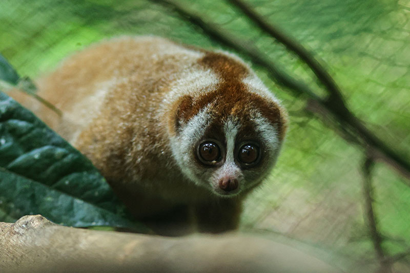
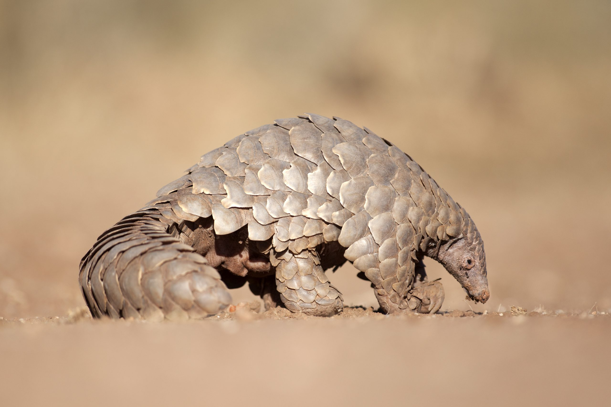
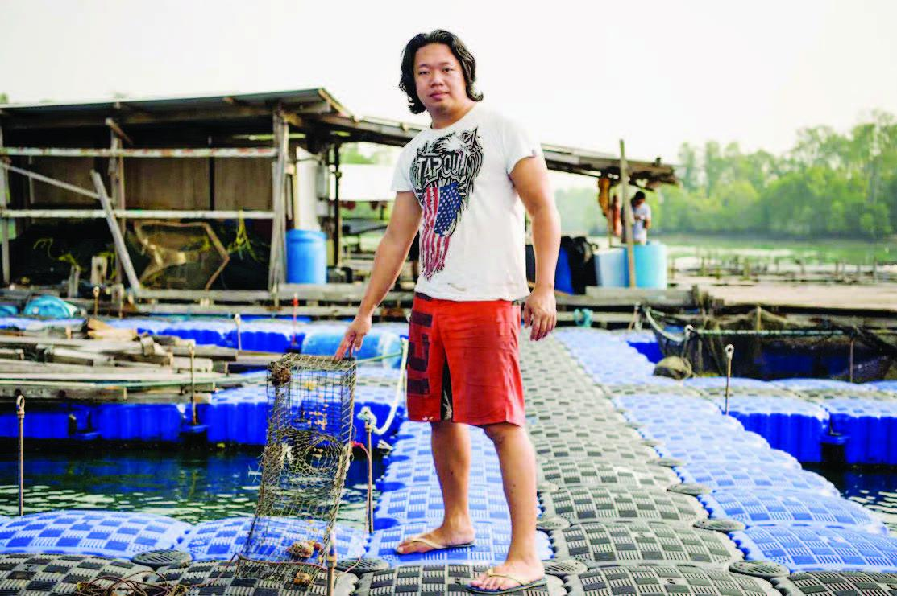

❣️ Merupakan sebuah pulau di dekat Semenanjung Malaka.
❣️ Negara Republik parlementer kesatuan, artinya dipimpin oleh 1 presiden namun diatur oleh beberapa
perdana menteri lainnya
❣️ Negaranya merupakan negara kota, karena ibu kotanya merupakan singapura itu sendiri
❣️ Negara terkecil dengan tingkat Ekonomi dan Teknologi tertinggi di ASEAN
❣️ Sebagian besar kota dipenuhi oleh gedung-gedung
❣️ Bekas pelabuhan ketika masa penjajahan Inggris
LETAK ASTRONOMIS
🗺️ Terletak pada 1°11'LU - 1°28'LU dan 103°30' BT - 104°05' BT
(1 derajat 11' LU - 1 derajat 28' LU dan 103 derajat 30 BT - 104 derajat 5 BT)
🗺️ Luas wilayahnya sebesar 685km²
🗺️ Batas-batas Pulau Singapura:
📍Utara : Selat Johor
📍Timur : Selat Karimata
📍Selatan : Selat Singapura
📍Barat : Selat Malaka
🗺️ Terletak pada Lempeng Eurasia
🗺️ Iklim: tropis, suhu tahunan 25 derajat
SUMBER DAYA ALAM
Singapura tergolong sebagai negara yang minim sumber daya alam.
🦥 Hewan : 2 hewan khas singapura yakni Kukang dan trenggiling bersisik.
🌿 Tumbuhan : tidak ada tumbuhan spesifik, namun beberapa tanaman eksotis dijadikan sebagai tanaman hias.
🌱 Pertanian : hampir seluruh hutan alam di Singapura sudah dirubah menjadi wilayah perkotaan sehingga hanya sedikit lahan yang dapat digunakan.
🐠 Perikanan : tidak banyak, namun ada industri akuakultur kecil, yaitu membudidayakan ikan-ikan kecil untuk memenuhi kebutuhan pangan.
⛏️ Pertambangan : Singapura hanya memiliki sedikit timah dan bijih besi, sehingga sebagian besar SDA Singapura merupakan hasil impor dari luar negeri.
🛫 Pariwisata : Singapura merupakan salah satu tujuan utama para wisatawan pada musim liburan.



KONDISI PENDUDUK
🦁 Disebut negara singa karena simbolnya merupakan Patung Merlion.
⛩️ Budaya : mereka tidak memiliki 1 budaya tetap karena Singapura merupakan negara dimana penduduknya berasal dari wilayah-wilayah lain. Sehingga
tidak heran apabila kita menjumpai berbagai penduduk dari negara asing di Singapura.
💃🏻 Bahasa : sama halnya dengan budaya, Singapura tidak memiliki bahasa tetap karena mereka masing-masing berasal dari negara yang berbeda dan
bermigrasi untuk menetap di Singapura. Namun, mayoritas penduduk di Singapura menggunakan bahasa Mandarin dan Inggris. Ada pula bahasa yang
sering kita kenal dengan sebutan ‘Singlish’ yaitu gabungan dari kedua bahasa yang sering mereka gunakan dengan aksen Singapura. Namun hebatnya,
perbedaan bahasa tersebut tidak menghentikan Singapura untuk terus bergerak maju dan berinovasi. Mereka tetap bisa melakukan perdagangan dengan
alternatif lain misalnya menggunakan bahasa isyarat dan kalkulator untuk menunjukan harga. Jadi, jangan heran jika saat kalian berkunjung ke
Singapura dan ada penduduk yang hanya menggunakan bahasa isyarat.
🕯️ Agama:
☸️ Buddha 31,1%
✝️ Kristen 18.90%
☪️ Islam 15,6%
💟 Taoisme 8,8%
☸️ Hindu 5%
💟 Agama lain 0,6%
💟 Tidak beragama 20%
Perbedaan agama ini tidak menjadi masalah bagi mereka, sebab penduduk Singapura sudah terbiasa untuk menganggap agama sebagai hal pribadi, bukan
sesuatu yang perlu dipermasalahkan di luar. Sehingga konflik agama hampir sama sekali tidak pernah terjadi di negara Singapura. Bahkan pemerintah
melarang untuk memasukan ajaran agama pada kurikulum sekolah.
 KEADAAN SINGAPURA
KEADAAN SINGAPURA
 LETAK ASTRONOMIS
LETAK ASTRONOMIS